以四季為序，我們觀察火候與食材在舌尖的節奏：從海的清澈，到炭火的低語，每一道料理都是一次短途旅行。
- 01 — 甜蝦 × 白蘿蔔｜昆布高湯的清亮與海味的甜
- 02 — 日本星鰻 × 味噌｜油脂、鹹香與酸度的平衡
- 03 — 花枝 × 日本茄子｜炙香與柔軟的雙重口感
- 04 — 活體龍蝦 × 娃娃菜｜海浪與奶泡的對話
- 05 — 創意漢堡｜牛肉、起司、紫菜的三拍子
- 06 — 和牛｜炭火的留白與肉汁的節奏
- 07 — 食光掠影｜片段、細節與餘韻
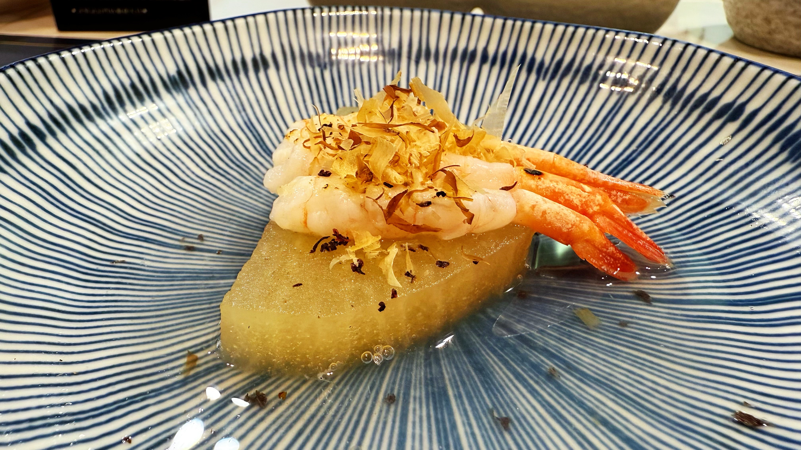
甜蝦 × 白蘿蔔
昆布高湯 · 木魚花 · 清澈與鮮甜
寒涼的高湯托起白蘿蔔的透明甜度，幾近無聲。甜蝦以最簡單的方式登場，肉質彈而不脆，像是剛被海風推上岸。木魚花在熱氣裡輕顫，帶出煙燻與氨基酸的香氣，收束整體輪廓。這是一道以留白為主題的前奏，將味蕾帶回到海的起點。
產地故事
白蘿蔔以低溫慢煮至透，吸飽昆布的旨味；甜蝦則選當季，新鮮度決定口感彈性。
料理技法
高湯不滾沸，維持70–80℃的溫度，避免混濁；蝦身汆燙後立即冰鎮，保留甜度。
搭配建議
純米吟釀或礦物感鮮明的白酒：突顯清甜與海味的乾淨線條。
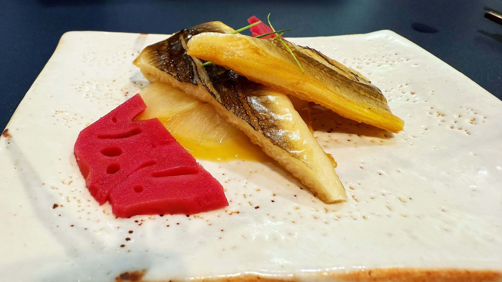
日本星鰻 × 味噌
油脂 · 鹹香 · 微酸的平衡
星鰻的油脂溫柔而綿長，味噌帶來厚度與鹹香，酸度則像輕輕推進的槳，讓整體不致遲滯。盤中一抹赤色的蓮藕，成為視覺與味覺的節點，提醒我們：平衡不是平均，而是恰到好處的留白與加重。
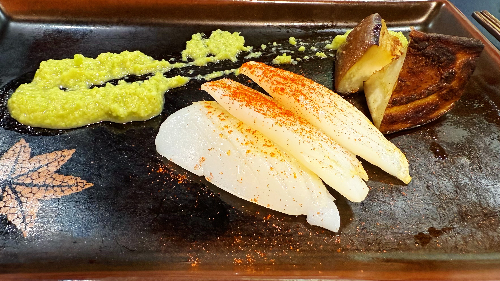
花枝 × 日本茄子
炙香 · 彈性 · 柔軟
花枝的刀工讓口感呈現微妙的彈與斷，炙燒輕帶焦香；日本茄子經高溫後釋出奶油般的柔軟，與醬泥的辛香對位。兩者一緊一鬆，像拍點分明的二重奏，節奏完成於齒間。
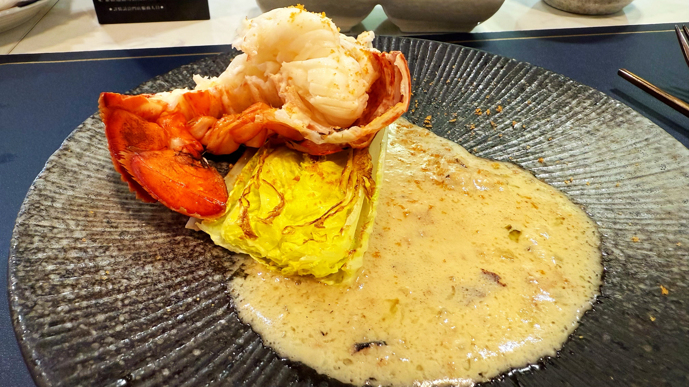
活體龍蝦 × 娃娃菜
海水的甜 · 奶泡的柔 · 炙烤的苦
龍蝦尾段緊致的纖維與天然甜味，遇上奶泡醬的圓潤，彼此相互映襯；娃娃菜經炙烤後帶出微苦，使整體更立體。這道菜像海浪退後後的沙紋，層次清楚，節奏從容。
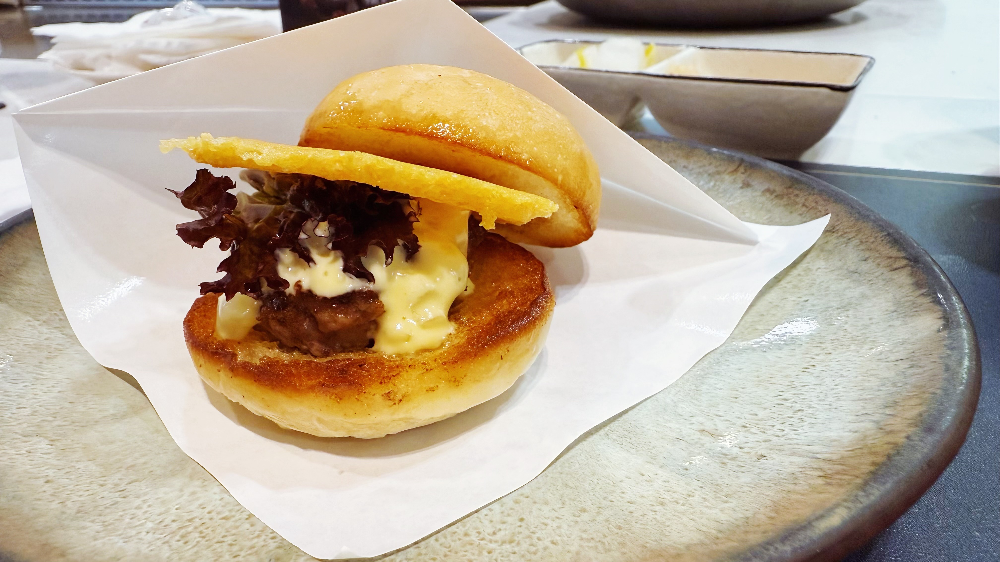
創意漢堡
牛肉 · 起司 · 紫菜
香煎後的麵包邊緣焦脆，牛肉多汁而有存在感；起司以溫度延展，紫菜則提供一抹海的氣息，讓街頭語彙與海味優雅地連線。這不是堆疊，而是組合——三拍子踩在同一個重拍上。
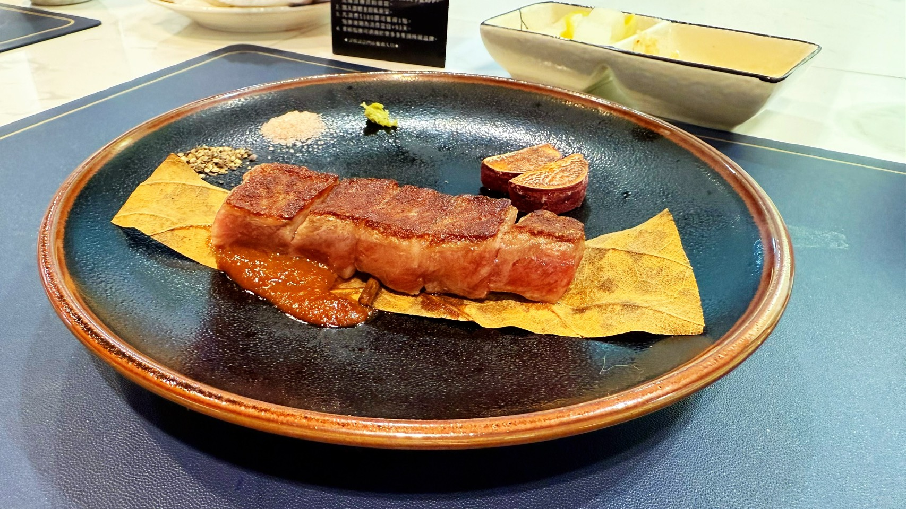
和牛
炭火 · 油脂 · 節制
外層僅作薄脆焦化，封住油脂；切面仍維持玫瑰色。三款佐料並非喧賓奪主，而是提供不同的入口角度：礦物感、辛香與醬的厚度。最重要的，是火候之後保留的靜默。
食光掠影
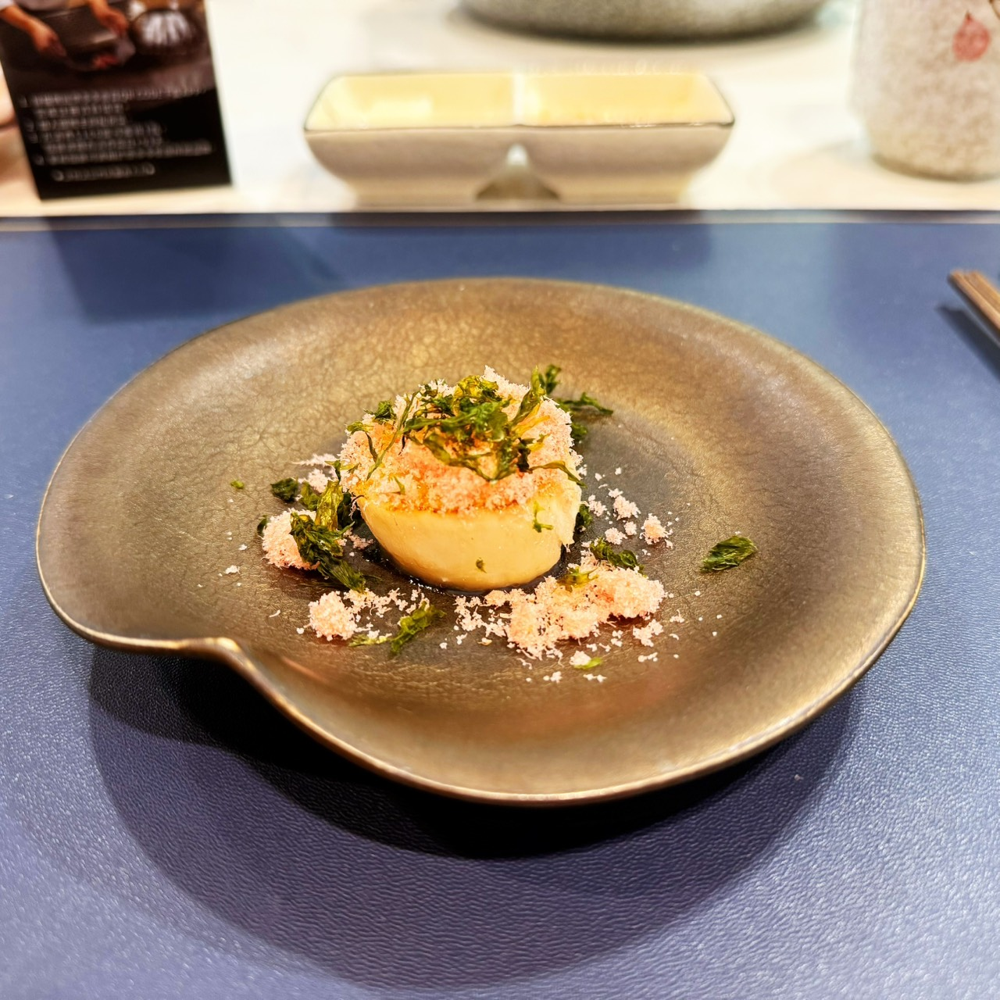
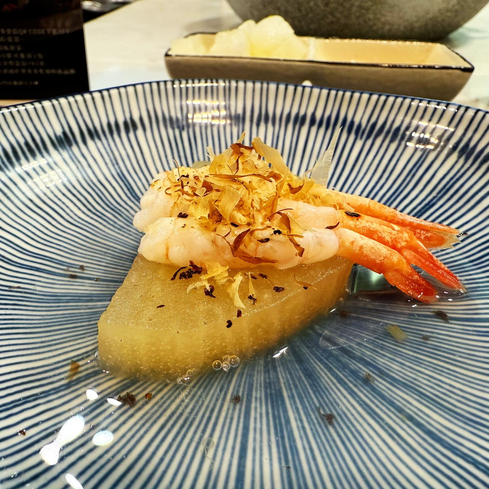
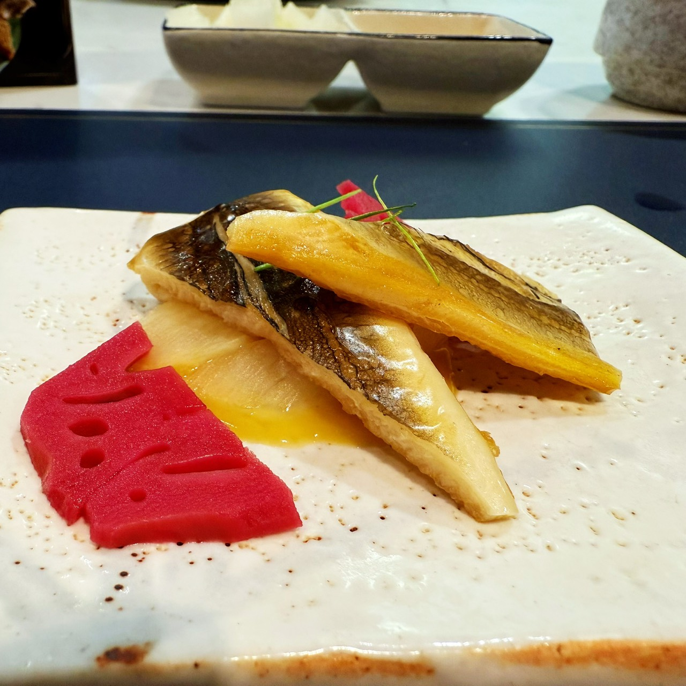
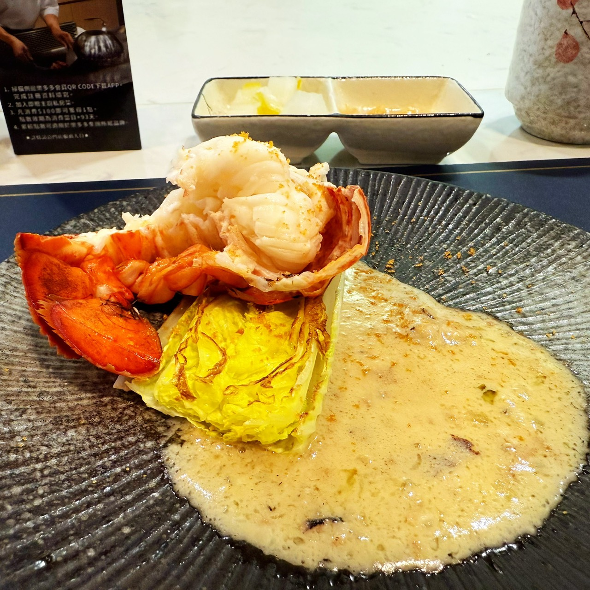
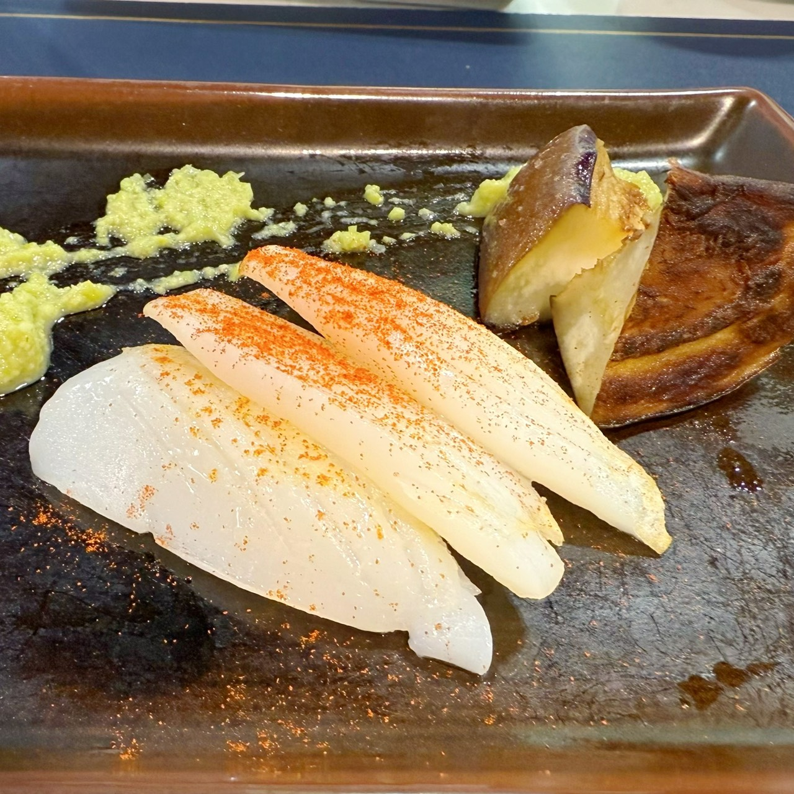
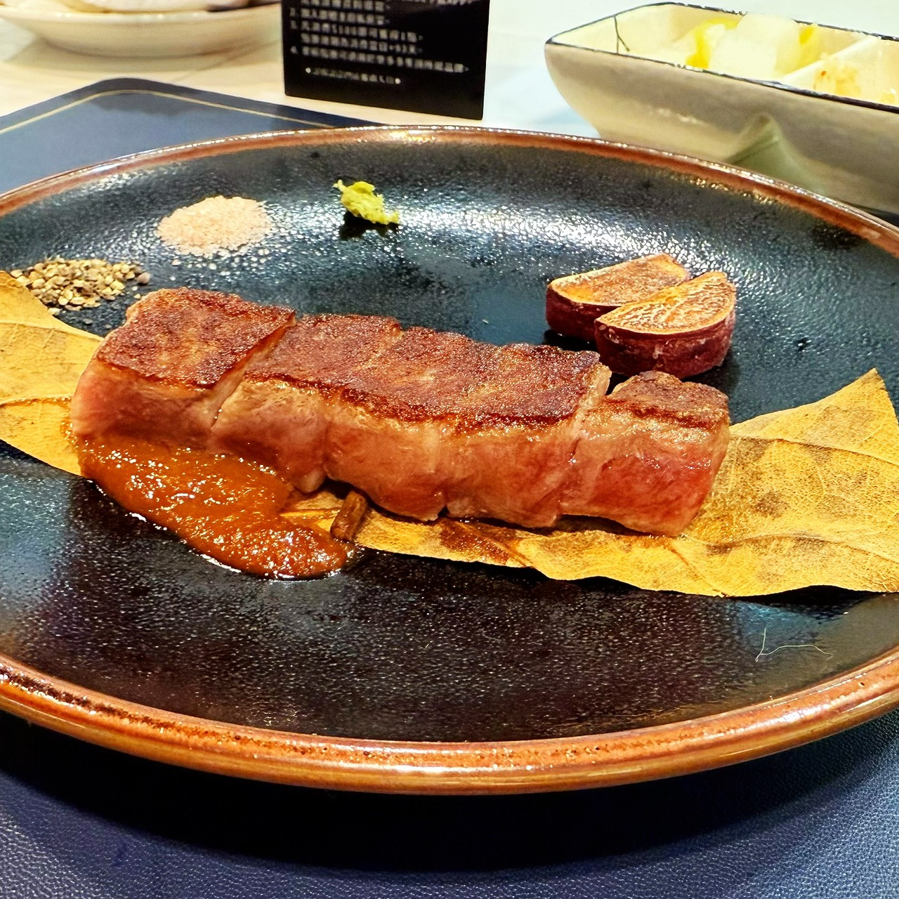
餘韻
每一道菜都是一次對話：與產地、與廚房、也與自己的味覺記憶。下一期，我們將前往更冷的海岸，尋找另一種「清澈」。